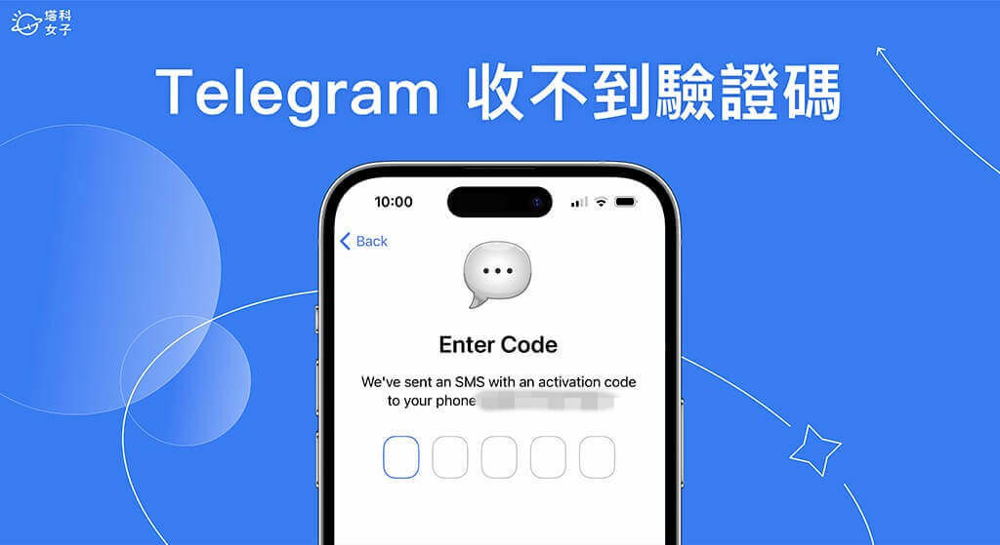
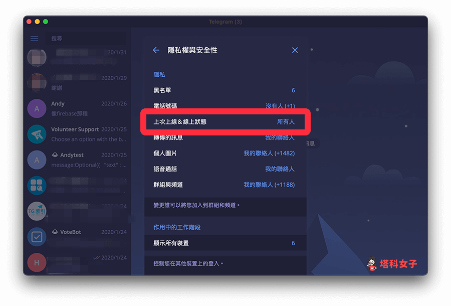
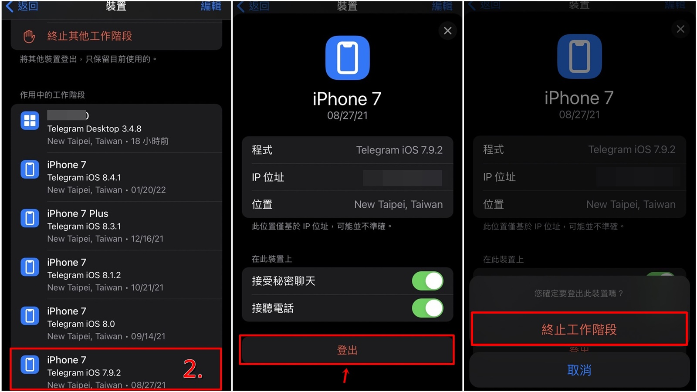

为什么Telegram收不到验证码？
Telegram收不到验证码可能有以下原因：网络问题：检查手机网络是否稳定，尝试切换Wi-Fi或移动数据。短信拦截：某些运营商可能会拦截国际短信，尝试使用“通过语音接收验证码”选项。错误的电话号码：确保输入的号码正确，并包含正确的国家区号。设备安全限制：检查是否使用了VPN或代理，这可能会影响验证码接收。

检查网络连接以解决Telegram验证码问题
确保手机网络正常
- 测试网络连接是否可用: 在打开Telegram之前，先尝试使用浏览器访问其他网站或使用其他应用联网。如果发现网络不稳定或无法访问互联网，可能是当前的网络导致验证码无法接收。
- 检查飞行模式设置: 设备开启飞行模式后会断开所有网络连接，包括移动数据和Wi-Fi。如果验证码未能收到，尝试关闭飞行模式，等待几秒钟后重新尝试获取验证码。
- 重启手机恢复网络: 有时，设备可能由于长时间未重启导致网络缓存异常。尝试关机重启手机，然后重新打开Telegram并请求验证码，看看是否能够顺利接收。
切换Wi-Fi与移动数据试试
- 尝试使用不同的网络环境: 如果当前连接的是Wi-Fi，可以尝试关闭Wi-Fi并使用移动数据接收验证码，或者相反。如果验证码在一种网络下无法接收，切换到另一种网络可能会有所改善。
- 检查Wi-Fi代理或防火墙设置: 某些公共Wi-Fi或使用代理服务器的网络可能会限制Telegram的连接，导致无法正常接收验证码。建议切换到家庭Wi-Fi或直接使用移动数据，以确保验证码能够发送到设备。
- 确认移动数据服务可用: 如果使用的是移动数据，但仍然收不到验证码，可能是运营商的问题。例如，某些SIM卡可能会受到数据流量限制，导致验证码无法顺利接收。尝试更换SIM卡或联系运营商确认是否有短信接收限制。
Telegram验证码无法收到的常见原因
短信被拦截或丢失
- 检查垃圾短信或拦截列表: 某些手机系统或第三方安全应用可能会自动将验证码短信标记为垃圾短信并拦截。建议打开短信应用的垃圾短信文件夹，看看是否有Telegram发送的验证码短信。
- 联系运营商确认短信服务状态: 某些移动运营商会出于安全或政策原因屏蔽来自国际号码的短信，特别是在某些地区。可以尝试联系运营商客服，确认是否有拦截，并要求解除限制。
- 尝试使用语音验证码: 如果短信验证码一直无法收到，可以选择Telegram提供的“通过语音接收验证码”选项。此方法会通过电话拨打你的号码，并以语音方式朗读验证码，适用于无法接收短信的情况。
输入的电话号码错误
- 确保输入正确的国家区号: 注册或登录Telegram时，必须输入正确的国家区号。例如，中国用户需要输入+86，美国用户需输入+1。如果输入错误的国家代码，即使电话号码正确，验证码也不会被发送到你的手机。
- 检查电话号码是否正确无误: 在输入电话号码时，建议仔细核对，确保没有多输入或少输入数字。如果号码输入错误，验证码将会发送到错误的号码，导致你无法收到消息。
- 确认该号码已启用短信服务: 有些电话号码，如固定电话、VoIP（网络电话）号码或部分虚拟号码，可能无法接收短信验证码。如果你使用的是虚拟号码，建议更换为可以接收短信的真实手机号码来获取验证码。

解决Telegram验证码无法接收的短信问题
尝试通过语音接收验证码
- 选择语音验证码选项: 当Telegram短信验证码无法收到时，可以在验证码输入页面选择“通过语音接收验证码”选项。Telegram会拨打你的手机，并以语音方式朗读验证码，适用于短信无法送达的情况。
- 确保手机处于可接听状态: 语音验证码需要用户接听电话，因此请确认手机信号稳定，未开启“勿扰模式”，并确保没有呼叫拦截功能阻止来自未知号码的来电。
- 留意来电号码和语言: 语音验证码通常是由Telegram的官方号码拨打，可能会以不同的语言朗读验证码。如果听不清楚，可以重复请求一次，或者使用手机录音功能保存语音信息，以便反复确认验证码内容。
联系运营商确认短信是否被阻挡
- 检查运营商是否屏蔽国际短信: 一些移动运营商可能会出于安全或政策原因，默认屏蔽来自国际号码的短信，导致Telegram验证码无法收到。可以致电客服，询问是否存在相关的限制，并请求解除屏蔽。
- 确保账户余额足够: 部分运营商要求手机号码账户内必须有足够余额才能接收国际短信，特别是在某些预付费SIM卡上。如果余额不足，可能会导致短信无法送达。
- 尝试更换SIM卡或使用其他号码: 如果同一号码始终无法接收验证码，而其他号码可以正常收到，可能是当前号码的短信服务受限。可以尝试使用不同的手机号码注册或登录Telegram，以确认问题是否出现在运营商端。

避免Telegram验证码问题的设置调整
禁用VPN或代理服务
- 检查VPN或代理是否干扰短信接收: 使用VPN或代理服务器可能会导致Telegram服务器误判你的IP地址位置，进而影响验证码的发送。如果验证码长时间未收到，建议暂时关闭VPN或代理后重试。
- 选择稳定的网络环境进行验证: 如果必须使用VPN访问Telegram，可以在接收验证码时先关闭VPN，使用本地网络获取短信，登录成功后再启用VPN，以避免网络地址冲突导致的验证码发送失败。
- 使用与注册地区匹配的网络: Telegram可能会根据IP地址判断用户的注册国家，如果你的VPN服务器位于与手机号码不同的国家，验证码可能无法正确发送。建议使用与手机号所在地区一致的网络进行验证。
关闭手机防火墙设置
- 检查是否启用了防火墙或安全软件: 一些手机自带的防火墙功能或第三方安全软件可能会拦截Telegram验证码短信。如果验证码未收到，建议进入防火墙或安全软件的设置，查看是否有拦截记录。
- 将Telegram添加到白名单: 在部分手机安全软件中，可以手动将Telegram添加到“信任名单”或“白名单”，确保它的验证码短信不会被误拦截或标记为垃圾短信。
- 重置短信权限设置: 如果仍然无法接收验证码，可以尝试进入手机的“设置”>“应用管理”>“Telegram”，检查是否禁用了短信权限。如果权限被禁用，开启后重新请求验证码即可恢复正常。
如何快速重试接收Telegram验证码
请求重新发送验证码
- 等待一段时间后再次请求: 如果长时间未收到验证码，可以等待几分钟后尝试重新请求。有时由于网络延迟，验证码可能会稍有延迟，重试发送请求可能会有所帮助。
- 点击“重新发送”按钮: 在Telegram验证码输入界面，通常会有一个“重新发送验证码”按钮。如果你没有收到验证码，点击这个按钮会自动请求重新发送。你可以多次尝试，但要注意有次数限制，避免过度操作。
- 确保网络稳定后重试: 在请求重新发送验证码时，确保手机处于稳定的网络环境中。切换到更强的Wi-Fi信号或者使用4G/5G移动数据，以确保验证码能够顺利发送到你的设备。
使用不同的接收方式尝试
- 选择语音接收验证码: 如果短信验证码无法收到，Telegram提供了通过语音电话接收验证码的选项。选择语音接收方式后，Telegram会拨打你的手机号码，通过电话语音读出验证码。
- 尝试使用其他手机号码: 如果你的当前号码始终无法收到验证码，可以尝试使用其他手机号码进行注册或登录。通过使用不同的号码来确认是否是网络或运营商的问题。
- 检查短信接收设置: 如果依然无法收到短信验证码，建议检查手机的短信接收设置。确认没有开启任何拦截、屏蔽陌生号码或将短信自动归类为垃圾短信的功能。
Telegram验证码被拦截怎么办？
如果Telegram验证码未收到，可能是运营商的短信服务阻止了国际短信。你可以联系运营商确认是否屏蔽了来自国际号码的短信，或者尝试使用语音验证码来绕过这一问题。
为什么Telegram验证码一直无法接收？
验证码无法接收可能是由于输入了错误的电话号码或国家区号。确保输入的电话号码正确，并且选择了正确的国家区号。如果仍然无法收到验证码，尝试更换网络环境或切换到另一种接收方式。
如何解决Telegram验证码发送失败的问题？
如果Telegram无法成功发送验证码，可以通过点击“重新发送验证码”来请求重新发送。还可以选择语音接收验证码，通过电话获得验证码。如果问题持续，考虑更换SIM卡或使用其他网络环境。
Telegram中文 其他新闻

Telegram下载的文件在哪？
Telegram下载的文件默认保存在你的设备上的Telegram文件夹中。在Android设备上，通常位于内部 […]
2025 年 05 月 22 日

Telegram怎么隐藏线上时间？
在Telegram中隐藏线上时间，打开设置，选择“隐私与安全”，点击“最后在线时间”。然后选择“没有人”或“我 […]
2025 年 01 月 16 日
为什么喜欢用Telegram？
人们喜欢使用Telegram的原因主要是因为它提供了高度的隐私保护和安全性。Telegram支持端对端加密的私 […]
2024 年 08 月 16 日

Telegram登出了怎么办？
如果你不慎登出了Telegram，只需重新打开应用并使用你的手机号码重新登录。输入接收到的验证码后，即可重新访 […]
2024 年 09 月 08 日